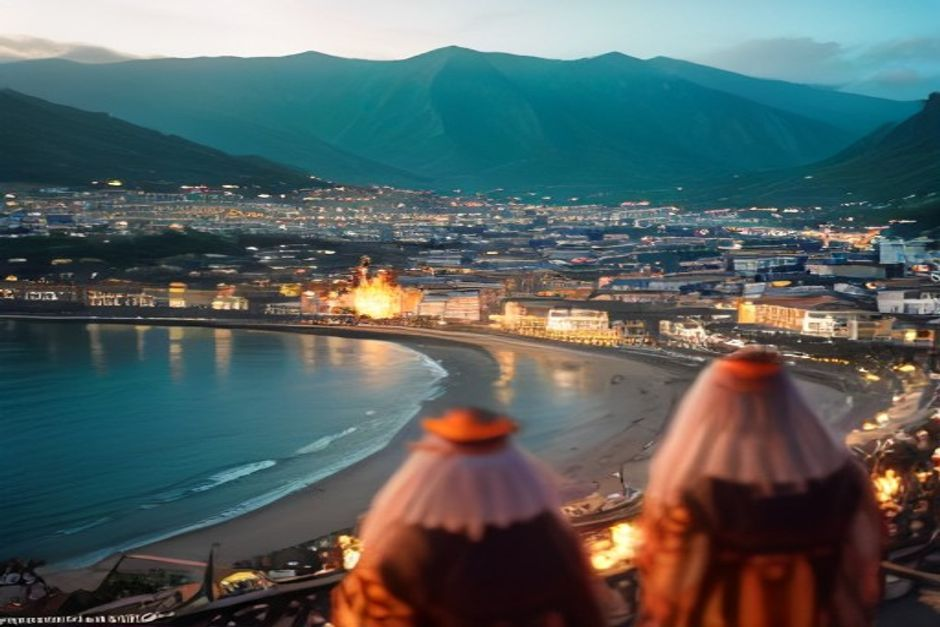

Einmal im Jahr brennen die Hänge über Machico – ganz absichtlich. Die Festa dos Fachos ist eine der ältesten noch lebendigen Traditionen Madeiras: eine Nacht aus lodernden Holzkonstruktionen, dem Ruf des Muschelhorns und einer Geschichte, die bis zu den Piratenüberfällen zurückreicht. Hier erfahren Sie, was es damit auf sich hat, wann es 2026 stattfindet und wo Sie am besten zuschauen.
Wann ist die Festa dos Fachos 2026?
Die Fachos brennen am Samstag, 29. August 2026, als Höhepunkt der Festa do Santíssimo Sacramento von Machico, einem zweitägigen Fest vom 29. bis 30. August. Nach der Abendmesse, gegen 21:00 Uhr, hallt der Klang des búzio — eines Muschelhorns — rund 30 Minuten lang durch das Tal und steigert sich bis zu dem Moment, in dem die Fachos entzündet werden.

Was ist ein Facho?
Ein Facho ist eine große Holzkonstruktion, die getränkt und umwickelt wird, damit sie langsam abbrennt statt in Sekunden aufzuflammen, und die in eine erkennbare Form gebracht wird — ein Kreuz, ein Kelch, ein Fisch, ein Boot oder ein anderes Symbol, das mit Machicos Geschichte und seiner Verbindung zum Meer verknüpft ist. In den Wochen vor dem Fest bereiten Familien und Nachbarschaftsgruppen Dutzende davon vor und tragen oder schleppen sie anschließend auf die Hänge über der Stadt. Werden sie gemeinsam entzündet, glüht der Bergkamm über Machico vor dem Nachthimmel.
Woher stammt die Tradition?
Aus einem Verteidigungssignal wurde ein Fest. Zwischen dem 16. und 18. Jahrhundert waren Madeiras Küstenorte regelmäßig Ziel von Piraten- und Korsarenüberfällen, und Machico — eine frühe, wohlhabende Siedlung an der exponierten Ostküste — bildete da keine Ausnahme. Leuchtfeuer, die von hoch gelegenen Punkten wie Pico do Facho entzündet wurden, warnten die Bewohner vor gesichteten Schiffen und gaben ihnen Zeit, sich zu mobilisieren und die Stadt zu verteidigen. Die Feuer verloren irgendwann ihren militärischen Zweck, erloschen aber nie: Im Laufe der Jahrhunderte wurden die Warnfeuer in die Festa do Santíssimo Sacramento integriert und zu den kunstvollen, symbolischen Fachos, die heute brennen.
Was passiert eigentlich in dieser Nacht?
Der Abend baut sich langsam auf und ist dann plötzlich da. Nach der Messe versammelt sich die Stadt auf und um den Hauptplatz, während der búzio ertönt, und Einheimische mit familiären Bindungen an bestimmte Fachos ziehen zu ihrem Platz am Hang. Sobald die Flammen fassen, leuchten die Hügel rund um das Tal von Machico — darunter auch der Pico do Facho — in orangefarbenen Punkten gegen die Dunkelheit auf, manche Konstruktionen brennen weit über eine Stunde lang. Zurück in der Stadt füllt sich der Platz mit Musik, Essensständen und einer wirklich einheimischen Menge; es ist in erster Linie ein Pfarrfest und erst in zweiter Linie ein Spektakel für Besucher — genau das macht es sehenswert.
Wo lässt es sich am besten beobachten?
Für den weitesten Blick über die brennenden Hänge bietet Pico do Facho selbst — der Aussichtspunkt nördlich von Machico, an der Straße vor dem Tunnel nach Caniçal, auf rund 280 Metern Höhe — das klassische Panorama über das Tal und gleich mehrere Fachos auf einmal. Für die Atmosphäre, den Ruf des búzio und die Menschenmenge bleiben Sie besser näher am Zentrum: Largo dos Franceses und die Straßen rund um Machicos Pfarrkirche versetzen Sie mitten ins Geschehen, statt es nur aus der Ferne zu betrachten. Am praktischsten ist es, am späten Nachmittag oder frühen Abend anzukommen — so bleibt Zeit, einen Platz zu finden, etwas zu essen und sich niederzulassen, bevor die Feuer in der Dämmerung entzündet werden.
Wie kommt man von Funchal nach Machico?
Machico liegt an Madeiras Ostküste, etwa 25–30 Minuten von Funchal entfernt, mit dem Auto oder Taxi über die Schnellstraße VE1, und ist auch mit dem öffentlichen Bus erreichbar. An einem gewöhnlichen Tag gibt es genug Parkplätze, aber eine Festnacht in einer Kleinstadt ist eine andere Geschichte — fahren Sie früh los oder überlassen Sie das Steuer jemand anderem. Es lohnt sich, den Ausflug getrennt zu planen: Machico liegt weit außerhalb des Küstenabschnitts, den ein privates Boot ab der Marina do Funchal tatsächlich abdeckt, also heben Sie sich das Wasser für einen eigenen Tag auf. Eine private Bootstour mit Chifbay führt entlang der näher gelegenen Südwestküste — Câmara de Lobos, Cabo Girão und die Buchten Richtung Ribeira Brava —, was sich natürlicher mit einem Nachmittag an Bord verbindet als mit einem Abend im Landesinneren.
Lohnt sich Machico auch abseits des Festes?
Ja. Machico war Madeiras erste Hauptstadt und der Ort der frühesten portugiesischen Besiedlung der Insel, und es hat noch immer den Grundriss einer alten Seefahrerstadt — ein langer Strand aus schwarzem Sand und Kiesel, eine Festung aus dem 15. Jahrhundert und eine Pfarrkirche aus den Anfangsjahren der Insel. Außerhalb des Festwochenendes ist es ein ruhigerer, bodenständigerer Gegenpol zu Funchal, mit guten Restaurants direkt am Meer und ohne das Gedränge der Marina. Verbinden Sie einen Vormittag beim Bummeln durch die Altstadt mit einem Nachmittag zurück auf dem Wasser, und Sie erleben zwei ganz unterschiedliche Seiten der Insel an einem Tag.
Einst entzündete Machico diese Hänge, um vor Gefahr zu warnen. Heute entzündet es sie, um sich zu erinnern.
Wenn Ihre Reisedaten mit dem 29. August zusammenfallen, ist das eines der eindrucksvollsten Erlebnisse, die die Insel zu bieten hat — und eine Erinnerung daran, dass Madeiras schönste Traditionen nicht für Besucher inszeniert werden, sie sind einfach zufällig die Fahrt wert.